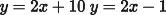
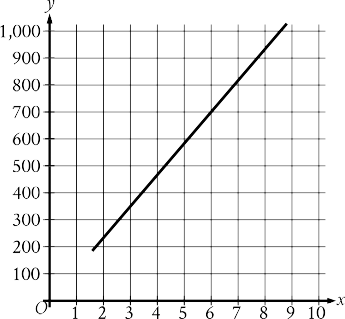
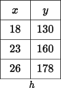
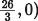
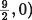
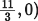
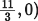
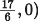

Characteristics for Rock Types
Rock type | Weight per volume (lb/ft3) | Cost per pound |
Basalt | 180 | $0.18 |
Granite | 165 | $0.09 |
Limestone | 120 | $0.03 |
Sandstone | 135 | $0.22 |
A city is planning to build a rock retaining wall, a monument, and a garden in a park. The table above shows four rock types that will be considered for use in the project. Also shown for each rock type is its weight per volume, in pounds per cubic foot (lb/ft3), and the cost per pound, in dollars. The equation
gives the total cost, in dollars, of the rocks used in the project in terms of the number of ft3 of limestone, w, and
the number of ft3 of basalt, z. All four rock types are used in the project. Which of the following is the best interpretation of 3,385.80 in this context?
Question 1
A. The cost of the granite and sandstone needed for the project
B. The cost of the basalt and limestone needed for the project
C. The cost of the basalt needed for the project
D. The cost of the sandstone needed for the project
If , what is the value of ?
 At how many points do the graphs of the given equations intersect in the xy-plane?
Question 2
A. Zero
B. Exactly one
C. Exactly two
D. Infinitely many
Oxygen gas is placed inside a tank with a constant volume. The graph shows the estimated temperature , in kelvins, of the oxygen gas when its pressure is atmospheres.

What is the estimated temperature, in kelvins, of the oxygen gas when its pressure is atmospheres? A. 
B.
C.
D.

For line , the table shows three values of and their corresponding values of . Line is the result of translating line down units in the xy-plane. What is the x-intercept of line ?
Question 3
A. 
B. 
C. 
 


D.